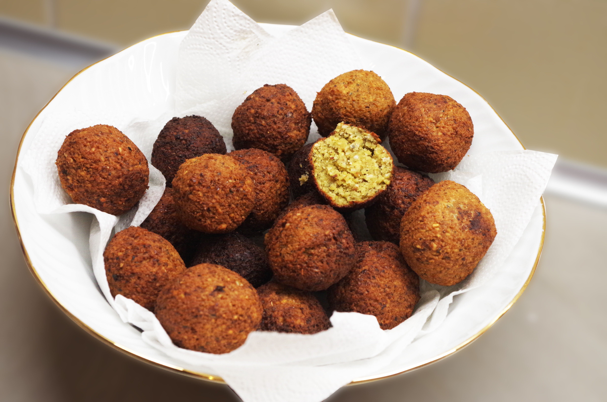

Falafel

Description
Falafel is a deep-fried ball or patty made from ground chickpeas, fava beans, or both. It is a popular Middle Eastern food.
It is often served in a pita bread with salad and tahini sauce.
Ingredients
- 1 cup dried chickpeas
- 1/2 onion, chopped
- 2 cloves garlic, minced
- 1/4 cup fresh parsley, chopped
- 1 tsp ground cumin
- 1 tsp ground coriander
- Salt and pepper to taste
- Oil for frying
Steps
- Soak the chickpeas in water for at least 2 hours.
- Drain the chickpeas and add them to a food processor with the onion, garlic, parsley, cumin, coriander, salt, and pepper.
- Process until the mixture is finely chopped but not smooth.
- Shape the mixture into balls or patties.
- Heat oil in a deep skillet over medium heat.
- Fry the falafel until golden brown on all sides.
Back to Recipes List